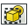

El módulo de Dibujo te permite poner en papel tu trabajo 3D. Es decir, sirve para poner vistas de tus modelos en una ventana 2D e insertar esas ventanas en un dibujo, por ejemplo una hoja con un formato, un título y tu logotipo y, finalmente, imprimir esa hoja. El módulo de Dibujo está en desarrollo y es más o menos una muestra de sus posibilidades!
Contents
Herramientas GUI
Estas son las herramientas para la creación, configuración y exportación de hojas de dibujo 2D
- Abre SVG scalable vector graphic: Abre una hoja de dibujo previamente guardada en un archivo SVG
{kind=link}
- Nueva hoja de dibujo en formato A3: Crea una hoja de dibujo nueva a partir de la plantilla por defecto A3 de FreeCAD
{kind=link}
-  Insertar una vista: Inserta una vista de los objetos seleccionados en la hoja de dibujo activa
{kind=link}
-
 Annotation: Adds an annotation to the current drawing sheet
Annotation: Adds an annotation to the current drawing sheet
-
 Clip: Adds a clip group to the current drawing sheet
Clip: Adds a clip group to the current drawing sheet
- Open Browser: Opens a preview of the current sheet in the browser
{kind=link}
- Ortho Views: Automatically creates orthographic views of an object on the current drawing sheet
{kind=link}
- Symbol: Adds the contents of a SVG file as a symbol on the current drawing sheet
{kind=link}
- Draft View: Inserts a special Draft view of the selected object in the current drawing sheet
{kind=link}
- Spreadsheet View: Inserts a view of a selected spreadsheet in the current drawing sheet
{kind=link}
- Guardar hoja de dibujo: Guarda la hoja de dibujo actual como un archivo SVG
{kind=link}
- Project Shape: Creates a projection of the selected object (Source) in the 3D view.
Nota La herramienta vista de boceto es utilizada principalmente para ubicar objetos boceto sobre papel. Tiene unas cuantas capacidades extras sobre las herramientas usuales de bocetos, y soporta objectos especificos como Dimensiones de boceto.

En la imagen se ven los principales elementos del módulo de Dibujo. El documento contiene un objeto forma (Schenkel) que queremos poner en papel. Para ello creamos una "Página". Una página se crea a partir de una plantilla, en este caso la plantilla "A3_apaisado". La plantilla es un documento SVG que puede contener la disposición habitual de tus dibujos, tu logotipo o los estándares que utilices.
En la página puedes insertar una o varias vistas. Cada vista tiene una posición en la página (Propiedades X, Y), un factor de escala (Propiedad escala) y propiedades adicionales. Cada vez que la página, o la vista, o el objeto referenciado cambia, la página se regenera y la visualización de la página se actualiza.
Archivos de guión
De momento, el interfaz (GUI) para el usuario final está poco desarrollado, por lo que los archivos de guión de la API son más interesantes. A continuación veremos ejemplos de cómo utilizar los archivos de guión de la API del módulo de Dibujo.
Aquí un guión que fácilmente puede llenar el Macro_CartoucheFC hoja FreeCAD A3_Landscape.
Ejemplo Simple
Lo primero, se necesitan los módulos Parte y Drawing:
import FreeCAD, Part, Drawing
Creamos una pequeña Pieza, como muestra
Part.show(Part.makeBox(100,100,100).cut(Part.makeCylinder(80,100)).cut(Part.makeBox(90,40,100)).cut(Part.makeBox(20,85,100)))
Proyección directa. G0 significa borde en arista, y G1 es continuidad de tangencia.
Shape = App.ActiveDocument.Shape.Shape [visibleG0,visibleG1,hiddenG0,hiddenG1] = Drawing.project(Shape) print "visible edges:", len(visibleG0.Edges) print "hidden edges:", len(hiddenG0.Edges)
Todo se proyecta sobre el plano Z:
print "Bnd Box shape: X=",Shape.BoundBox.XLength," Y=",Shape.BoundBox.YLength," Z=",Shape.BoundBox.ZLength print "Bnd Box project: X=",visibleG0.BoundBox.XLength," Y=",visibleG0.BoundBox.YLength," Z=",visibleG0.BoundBox.ZLength
Vector de proyección diferente
[visibleG0,visibleG1,hiddenG0,hiddenG1] = Drawing.project(Shape,App.Vector(1,1,1))
Projectar a SVG
resultSVG = Drawing.projectToSVG(Shape,App.Vector(1,1,1)) print resultSVG
En modo paramétrico
Se Crea la pieza
import FreeCAD
import Part
import Drawing
# Create three boxes and a cylinder
App.ActiveDocument.addObject("Part::Box","Box")
App.ActiveDocument.Box.Length=100.00
App.ActiveDocument.Box.Width=100.00
App.ActiveDocument.Box.Height=100.00
App.ActiveDocument.addObject("Part::Box","Box1")
App.ActiveDocument.Box1.Length=90.00
App.ActiveDocument.Box1.Width=40.00
App.ActiveDocument.Box1.Height=100.00
App.ActiveDocument.addObject("Part::Box","Box2")
App.ActiveDocument.Box2.Length=20.00
App.ActiveDocument.Box2.Width=85.00
App.ActiveDocument.Box2.Height=100.00
App.ActiveDocument.addObject("Part::Cylinder","Cylinder")
App.ActiveDocument.Cylinder.Radius=80.00
App.ActiveDocument.Cylinder.Height=100.00
App.ActiveDocument.Cylinder.Angle=360.00
# Fuse two boxes and the cylinder
App.ActiveDocument.addObject("Part::Fuse","Fusion")
App.ActiveDocument.Fusion.Base = App.ActiveDocument.Cylinder
App.ActiveDocument.Fusion.Tool = App.ActiveDocument.Box1
App.ActiveDocument.addObject("Part::Fuse","Fusion1")
App.ActiveDocument.Fusion1.Base = App.ActiveDocument.Box2
App.ActiveDocument.Fusion1.Tool = App.ActiveDocument.Fusion
# Cut the fused shapes from the first box
App.ActiveDocument.addObject("Part::Cut","Shape")
App.ActiveDocument.Shape.Base = App.ActiveDocument.Box
App.ActiveDocument.Shape.Tool = App.ActiveDocument.Fusion1
# Hide all the intermediate shapes
Gui.ActiveDocument.Box.Visibility=False
Gui.ActiveDocument.Box1.Visibility=False
Gui.ActiveDocument.Box2.Visibility=False
Gui.ActiveDocument.Cylinder.Visibility=False
Gui.ActiveDocument.Fusion.Visibility=False
Gui.ActiveDocument.Fusion1.Visibility=False
Inserta un objeto página (Page object), y le asigna una plantilla
App.ActiveDocument.addObject('Drawing::FeaturePage','Page')
App.ActiveDocument.Page.Template = App.getResourceDir()+'Mod/Drawing/Templates/A3_Landscape.svg'
Crea una vista del objeto "forma", define la posicion y la escala, y la asigna a la Página
App.ActiveDocument.addObject('Drawing::FeatureViewPart','View')
App.ActiveDocument.View.Source = App.ActiveDocument.Shape
App.ActiveDocument.View.Direction = (0.0,0.0,1.0)
App.ActiveDocument.View.X = 10.0
App.ActiveDocument.View.Y = 10.0
App.ActiveDocument.Page.addObject(App.ActiveDocument.View)
Crea una segunda vista del mismo objecto, pero esta vez la vista está girada 90 grados.
App.ActiveDocument.addObject('Drawing::FeatureViewPart','ViewRot')
App.ActiveDocument.ViewRot.Source = App.ActiveDocument.Shape
App.ActiveDocument.ViewRot.Direction = (0.0,0.0,1.0)
App.ActiveDocument.ViewRot.X = 290.0
App.ActiveDocument.ViewRot.Y = 30.0
App.ActiveDocument.ViewRot.Scale = 1.0
App.ActiveDocument.ViewRot.Rotation = 90.0
App.ActiveDocument.Page.addObject(App.ActiveDocument.ViewRot)
Crea una tercera vista del mismo objeto, pero en proyección isométrica. Se activa también la ocultación de líneas.
App.ActiveDocument.addObject('Drawing::FeatureViewPart','ViewIso')
App.ActiveDocument.ViewIso.Source = App.ActiveDocument.Shape
App.ActiveDocument.ViewIso.Direction = (1.0,1.0,1.0)
App.ActiveDocument.ViewIso.X = 335.0
App.ActiveDocument.ViewIso.Y = 140.0
App.ActiveDocument.ViewIso.ShowHiddenLines = True
App.ActiveDocument.Page.addObject(App.ActiveDocument.ViewIso)
Cambiamos algo, y actualizamos. Se regenera la vista y la página.
App.ActiveDocument.View.X = 30.0 App.ActiveDocument.View.Y = 30.0 App.ActiveDocument.View.Scale = 1.5 App.ActiveDocument.recompute()
Accediendo a los datos y las partes
Obtiene el fragmento de SVG de una sola vista
ViewSVG = App.ActiveDocument.View.ViewResult print ViewSVG
Obtiene la página de resultados completa (Es un archivo en el directorio de archivos temporales, con permisos de solo lectura)
print "Resulting SVG document: ",App.ActiveDocument.Page.PageResult file = open(App.ActiveDocument.Page.PageResult,"r") print "Result page is ",len(file.readlines())," lines long"
Importante: Liberar el archivo!
del file
Inserta una vista con tu propio contenido:
App.ActiveDocument.addObject('Drawing::FeatureView','ViewSelf')
App.ActiveDocument.ViewSelf.ViewResult = """<g id="ViewSelf"
stroke="rgb(0, 0, 0)"
stroke-width="0.35"
stroke-linecap="butt"
stroke-linejoin="miter"
transform="translate(30,30)"
fill="#00cc00"
>
<ellipse cx="40" cy="40" rx="30" ry="15"/>
</g>"""
App.ActiveDocument.Page.addObject(App.ActiveDocument.ViewSelf)
App.ActiveDocument.recompute()
del ViewSVG
Eso da como resultado lo siguiente:
{kind=link}
Tolerancias y dimensionado en general
Dimensiones y tolerancias de bocetos siguen bajo desarrollo pero tu puedes obtener algunas funcionalidades basicas con un poco de trabajo.
Primero necesitas obtener el modulo gdtsvg de python de aquí (advertencia: esto podria fallar en cualquier momento!):
https://github.com/jcc242/FreeCAD
Para obtener un marco caracteristico de control, intenta lo siguiente:
import gdtsvg as g # Import the module, I like to give it an easy handle
ourFrame = g.ControlFrame("0","0", g.Perpendicularity(), ".5", g.Diameter(), g.ModifyingSymbols("M"), "A",
g.ModifyingSymbols("F"), "B", g.ModifyingSymbols("L"), "C", g.ModifyingSymbols("I"))
Here is a good breakdown of the contents of a feature control frame: http://www.cadblog.net/adding-geometric-tolerances.htm
The parameters to pass to control frame are:
- X-coordinate in SVG-coordinate system (type string)
- Y-coordinate in SVG-coordinate system (type string)
- The desired geometric characteristic symbol (tuple, svg string as first, width of symbol as second, height of symbol as third)
- The tolerance (type string)
- (optional) The diameter symbol (tuple, svg string as first, width of symbol as second, height of symbol as third)
- (optional) The condition modifying material (tuple, svg string as first, width of symbol as second, height of symbol as third)
- (optional) The first datum (type string)
- (optional) The first datum's modifying condition (tuple, svg string as first, width of symbol as second, height of symbol as third)
- (optional) The second datum (type string)
- (optional) The second datum's modifying condition (tuple, svg string as first, width of symbol as second, height of symbol as third)
- (optional) The third datum (type string)
- (optional) The third datum's material condition (tuple, svg string as first, width of symbol as second, height of symbol as third)
The ControlFrame function returns a type containing (svg string, overall width of control frame, overall height of control frame)
To get a dimension, try out the following:
import gdtsvg
ourDimension = linearDimension(point1, point2, textpoint, dimensiontext, linestyle=getStyle("visible"),
arrowstyle=getStyle("filled"), textstyle=getStyle("text")
Inputs for linear dimension are:
- point1, an (x,y) tuple with svg-coordinates, this is one of the points you would like to dimension between
- point2, an (x,y) tuple with svg-coordinates, this is the second point you would like to dimension between
- textpoint, an (x,y) tuple of svg-coordinates, this is where the text of your dimension will be
- dimensiontext, a string containing the text you want the dimension to say
- linestyle, a string containing svg (i.e. css) styles, using the getStyle function to retrieve a preset string, for styling the how the lines look
- arrowstyle, a string containing svg (i.e. css) styles, using the getStyle function to retrieve a preset string, for styling how the arrows look
- textstyle, a string containing svg (i.e. css) styles, using the getStyle function to retrieve a preset string, for styling how the text looks
With those two, you can proceed as above for displaying them on the drawing page. This module is very buggy and can be broken at any given moment, bug reports are welcome on the github page for now, or contact jcc242 on the forums if you post a bug somewhere else.
Plantillas
FreeCAD viene con un juego de plantillas básico, pero se pueden obtener más en la página Drawing templates/es.
Extending the Drawing Module
Some notes on the programming side of the drawing module will be added to the Drawing Documentation page. This is to help quickly understand how the drawing module works, enabling programmers to rapidly start programming for it.
Tutorials
External links